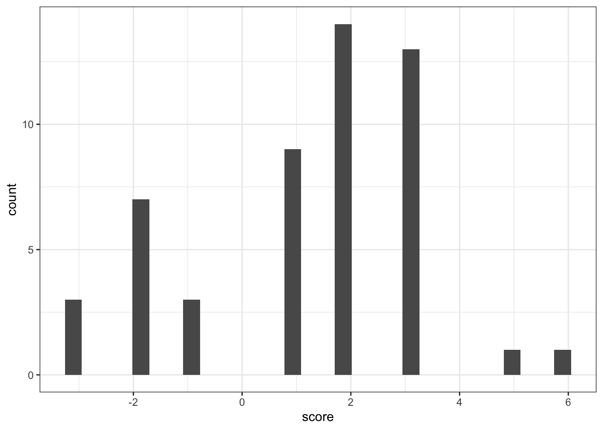

library(rvest)
library(tidyverse)
library(tidytext)
library(textdata)Class activity solutions
url <- "http://en.wikipedia.org/wiki/List_of_songs_recorded_by_the_Beatles"
songs <- read_html(url) |>
html_element(".wikitable.sortable") |>
html_table()songs <- songs |>
rename(vocals = starts_with("Lead"),
album = starts_with("Core"),
writers = 'Songwriter(s)') |>
select(Song, album, writers, vocals, Year)songs <- songs |>
mutate(Song = str_remove_all(Song, '\\"'),
Song = str_extract(Song, ".+?(?=( #|[\\[]|$))"))song_words <- songs |>
unnest_tokens(word, Song, drop=F) |>
anti_join(get_stopwords(), join_by("word"))
song_words# A tibble: 423 × 6
Song album writers vocals Year word
<chr> <chr> <chr> <chr> <int> <chr>
1 Across the Universe Let It BePast Masters LennonMcCartney Lennon 1969 acro…
2 Across the Universe Let It BePast Masters LennonMcCartney Lennon 1969 univ…
3 Act Naturally Help! Johnny Russell… Starr 1965 act
4 Act Naturally Help! Johnny Russell… Starr 1965 natu…
5 All I've Got to Do With the Beatles LennonMcCartney Lennon 1963 got
6 All My Loving With the Beatles LennonMcCartney McCar… 1963 lovi…
7 All Together Now Yellow Submarine LennonMcCartney McCar… 1969 toge…
8 All Together Now Yellow Submarine LennonMcCartney McCar… 1969 now
9 All You Need Is Love Magical Mystery Tour LennonMcCartney Lennon 1967 need
10 All You Need Is Love Magical Mystery Tour LennonMcCartney Lennon 1967 love
# ℹ 413 more rowsafinn <- get_sentiments("afinn")
head(afinn)# A tibble: 6 × 2
word value
<chr> <dbl>
1 abandon -2
2 abandoned -2
3 abandons -2
4 abducted -2
5 abduction -2
6 abductions -27,9.
song_words |>
inner_join(afinn, join_by("word")) |>
group_by(Song) |>
summarize(score = sum(value)) |>
ggplot(aes(x = score)) +
geom_histogram() +
theme_bw()`stat_bin()` using `bins = 30`. Pick better value with `binwidth`.